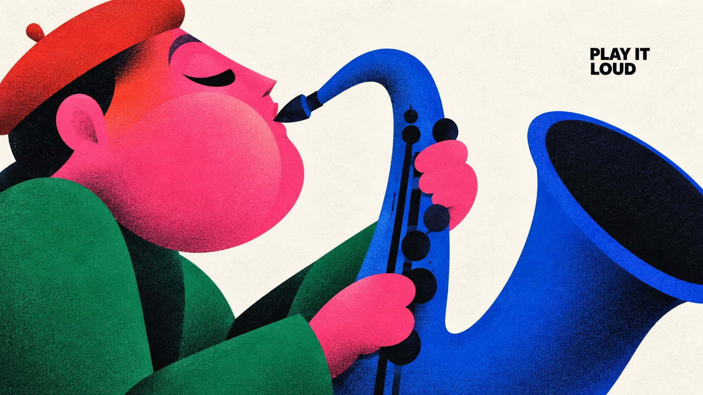
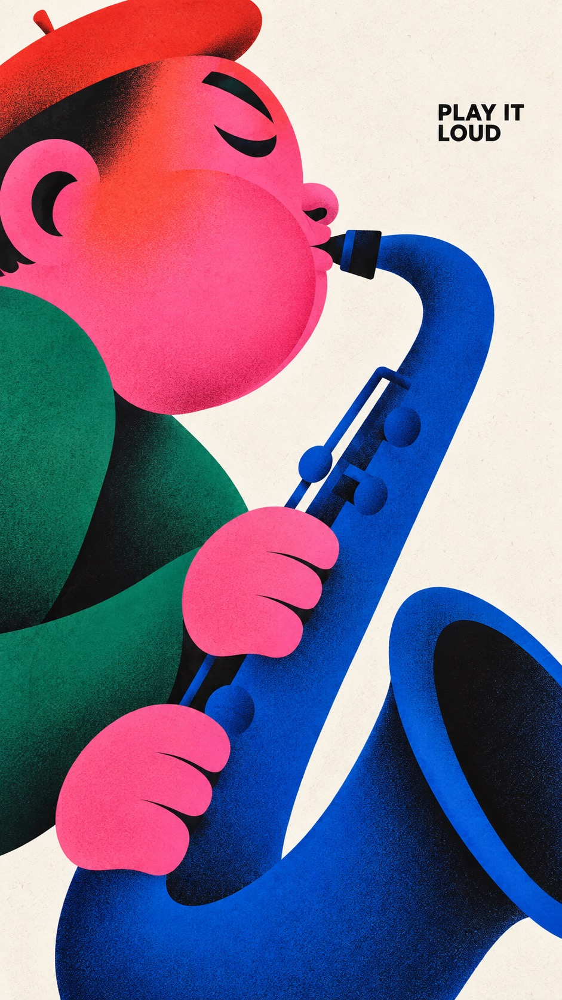
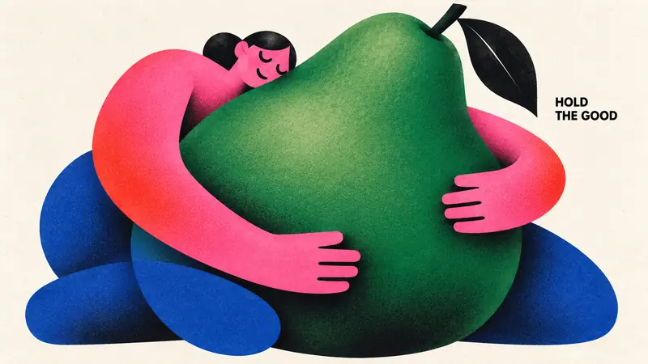
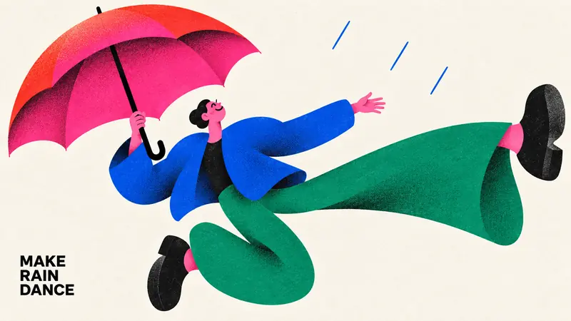
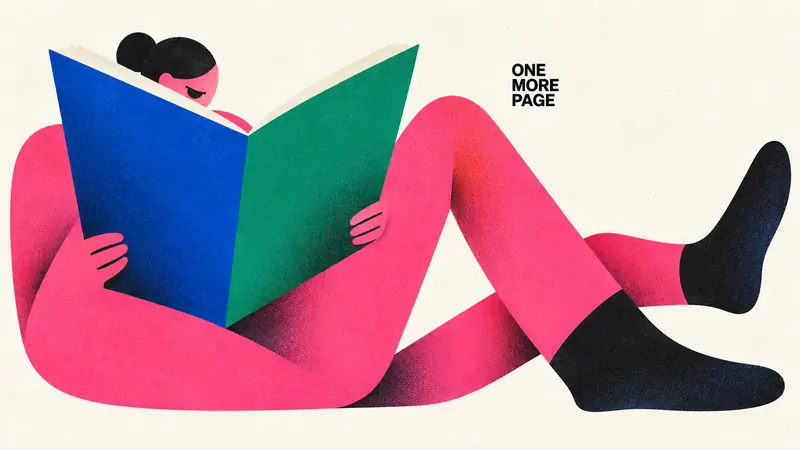

Type Posters · AI image style prompt
Chromatic Gesture Characters
Exaggerated geometric character posters with sculptural color blocks, minimal black faces, hot-pink clashes, airbrushed shadows and fine print grain.


4 example cases
Same style.json, different subjects. Each case's values are in the examples section of the JSON.



What this style does
Exaggerated geometric character illustration: sculptural color blocks, minimal black cut-paper faces, hot-pink clashes, selectively airbrushed shadows and fine print grain compress emotion and action into a bold poster silhouette.
Signature traits
- Build a monumental, asymmetric character silhouette from few interlocking circles, flattened capsules, wedges, tapered limbs and large flowing contour cuts; enlarge anatomy according to the emotional gesture.
- Use nearly black, radically reduced facial marks and weight-bearing accents; eyes, brows and mouth read as deliberately cut graphic shapes rather than detailed drawing.
- Pair a dominant hot pink or magenta color field with one adjacent warm red or coral gradient and two saturated cool counterweights, on an open off-white paper ground.
- Keep most shapes flat and crisply bounded, with localized dark-to-color airbrushed shading at overlaps or bends and the specified fine print texture; depth must remain graphic.
- Let the character-object interaction carry the poster; sparse small bold black uppercase sans-serif copy occupies a useful pocket of negative space.
- Change pose, gaze, crop, size relationships and title location to make the action legible; a full body, profile crop, enclosing gesture or reclining arrangement are equally valid.
style.json
{
"style_version": "1.0.0",
"style_name": "Chromatic Gesture Characters",
"style_slug": "chromatic-gesture-characters",
"style_summary": "Exaggerated geometric character illustration: sculptural color blocks, minimal black cut-paper faces, hot-pink clashes, selectively airbrushed shadows and fine print grain compress emotion and action into a bold poster silhouette.",
"environment_variables": {
"ASPECT_RATIO": "9:16 or 16:9",
"STYLE_FIDELITY_ANCHORS": "Runtime joined CORE and FLEX anchors from this spec",
"SOURCE_CONTENT_TO_AVOID": "Runtime joined source-specific content exclusions",
"SUBJECT": "New character identity and a small number of theme-bearing objects",
"ACTION": "Readable physical interaction and emotional expression",
"DESIGN_DIRECTION": "The case concept and its visible contribution to hierarchy and silhouette",
"PALETTE_DIRECTION": "Roles of saturated colors within the shared chromatic system",
"MAIN_TEXT": "Only visible wording, exact uppercase spelling without added punctuation",
"PORTRAIT_PLAN": "Composition intention for the 9:16 image",
"LANDSCAPE_PLAN": "Composition intention for the 16:9 image",
"SUBJECT_ACTION": "the readable physical interaction and emotional expression described in ACTION",
"PRODUCT_OR_PROP": "one or two oversized theme-bearing objects that join the character silhouette",
"LOCATION": "edge-to-edge off-white paper with no scene; depth implied only by overlapping shapes",
"BACKGROUND_ELEMENTS": "bare paper gaps, selective grainy airbrushed shadow and the small black caption",
"SECONDARY_TEXT": "none; MAIN_TEXT is the only visible wording",
"ACCENT_SYMBOL": "the minimal black cut-paper facial marks",
"WARDROBE_STYLE": "flat sculptural garment blocks in hot pink, coral red, cobalt and emerald"
},
"style_fidelity_anchors": [
"[CORE] Build a monumental, asymmetric character silhouette from few interlocking circles, flattened capsules, wedges, tapered limbs and large flowing contour cuts; enlarge anatomy according to the emotional gesture.",
"[CORE] Use nearly black, radically reduced facial marks and weight-bearing accents; eyes, brows and mouth read as deliberately cut graphic shapes rather than detailed drawing.",
"[CORE] Pair a dominant hot pink or magenta color field with one adjacent warm red or coral gradient and two saturated cool counterweights, on an open off-white paper ground.",
"[CORE] Keep most shapes flat and crisply bounded, with localized dark-to-color airbrushed shading at overlaps or bends and the specified fine print texture; depth must remain graphic.",
"[CORE] Let the character-object interaction carry the poster; sparse small bold black uppercase sans-serif copy occupies a useful pocket of negative space.",
"[FLEX] Change pose, gaze, crop, size relationships and title location to make the action legible; a full body, profile crop, enclosing gesture or reclining arrangement are equally valid.",
"[FLEX] Let an instrument, fruit, umbrella or book transform the silhouette and negative space as part of the story, with no decorative prop pile.",
"[FLEX] Recompose portrait and landscape around their available width and height; preserve the case's conceptual relationship while changing overlaps and focal placement."
],
"source_content_to_avoid": [
"The original angry seated man with enormous sideways ear, black side-parted hair and crossed short legs",
"The two white pointed steam puffs issuing from nostrils",
"The exact phrase A LITTLE(BIG) MAD. and all source wording",
"The small oval creator stamp, source signature, watermark or brand identity",
"The original green sleeves, blue trousers, pink head and large black shoes repeated in the same placement"
],
"visual_deconstruction": {
"source_observations": "The source enlarges the head and ear into a compressed standing monument. The tiny two-line caption is secondary. Magenta cheeks shift into red forehead; curved black mouth and slanted brows establish anger. Green and cobalt body forms stabilize the composition. White steam marks carve the figure.",
"reusable_system": "Emotion becomes shape, not facial detail. Scale contrast, black cut-shape expressions, complementary saturated blocks, grainy localized gradients and sparse paper space are transferable.",
"scope": "Creative reinterpretation within the style. Each theme must affect interaction and silhouette, not merely replace the source's caption or accessory."
},
"composition": {
"hierarchy": "Gesture silhouette first, face/object relationship second, small caption third. Keep visual complexity low.",
"negative_space": "Use paper gaps to separate limbs and objects and to carry the caption; no decorative panel framing.",
"ratio_adaptation": "Use the applicable case plan. Portrait may stack or climb; landscape may unfold or stretch. Do not crop a finished portrait to fill the landscape."
},
"typography": {
"family": "Compact bold grotesk sans-serif, plain black uppercase",
"role": "Small editorial aside, approximately 4 to 7 percent of image height as a complete text block, subordinate to the illustration",
"copy": "Render MAIN_TEXT verbatim once. Line breaks are flexible; no additional punctuation, byline, labels or fabricated logo."
},
"color_palette": {
"paper": "#F3F1EB",
"ink": "#10100F",
"hot_pink": "#F553D2",
"warm_red": "#F42726",
"cobalt": "#293EA1",
"emerald": "#13785D",
"relationships": "Hot pink plus warm gradient against emerald and cobalt; roles may shift per case. Use off-white as active negative space and near-black as graphic weight."
},
"image_treatment": {
"medium": "Raster illustration with the shape economy of cut-paper and airbrushed screen print",
"texture": "Fine, low-contrast stochastic halftone-like ink stipple and paper tooth, approximately 1 to 3 pixels at a 1500-pixel short edge. Most visible inside saturated and black shapes; very faint in the off-white background. Dark grain concentrates in shaded overlaps. No large scratches, folds, distress or coarse canvas weave.",
"edges_and_light": "Crisp contour silhouettes, softly diffused interior gradient shadows limited to overlaps and volume turns; matte ink, no glossy 3D illumination."
},
"design_rules": [
"Each case must turn its action into a distinct silhouette and meaningful negative-space relationship.",
"Keep limb and hand anatomy intentionally simplified but physically readable; no accidental extra appendages.",
"Objects must participate in the gesture at an expressive scale instead of floating as accessories.",
"Keep the exact short caption clearly readable with generous separation from the focal face and object.",
"Produce a full-bleed artwork on off-white paper, without a framed mockup or photographic scene.",
"Keep color count controlled and reduce background detail to marks necessary for the case."
],
"do": [
"Use large asymmetric masses with small facial marks.",
"Use white gaps as structural parts of the gesture.",
"Recompose both ratios deliberately.",
"Keep texture integrated with ink and preserve clean silhouette contours."
],
"avoid": [
"Copying the source character, angry pose, steam icons or signature.",
"Photorealistic people, shiny toy renderings, generic cute mascots or outlined cartoons.",
"Huge headline typography, dense labels, decorative stars and extra logos.",
"Four identical centered seated poses with different accessories."
],
"prompt_template": "Use case: stylized-concept. Create one finished {ASPECT_RATIO} editorial character poster in the Chromatic Gesture Characters visual system. This is a standalone raster artwork, edge-to-edge off-white paper, with no surrounding mockup.\n\nPRIORITIZED STYLE:\n{STYLE_FIDELITY_ANCHORS}\n\nSUBJECT: {SUBJECT}\nACTION AND EMOTION: {ACTION}\nDESIGN INTENTION: {DESIGN_DIRECTION}\nCOLOR ROLES: {PALETTE_DIRECTION}\n\nRATIO ADAPTATION: if 9:16, follow this portrait direction: {PORTRAIT_PLAN} If 16:9, follow this landscape direction: {LANDSCAPE_PLAN} Use only the plan appropriate to the requested ratio. Make a coherent single image with natural paper margins.\n\nTEXT: Render exactly \"{MAIN_TEXT}\" once, without quotation marks or punctuation. Plain bold black uppercase grotesk sans-serif, small editorial caption rather than headline. Flexible line breaks in a meaningful empty pocket. No other text or logo.\n\nPRINT FINISH: Fine, low-contrast stochastic halftone-like ink stipple and paper tooth, about 1 to 3 pixels at a 1500-pixel short edge, most visible inside saturated and black shapes, very faint in the off-white background. Dark grain concentrates in shaded overlaps. Crisp silhouette edges; selective soft dark-to-color spray gradients inside overlapping shapes. Matte ink, predominantly flat graphic forms; no glossy 3D rendering or coarse distress.\n\nSOURCE CONTENT TO REPLACE:\n{SOURCE_CONTENT_TO_AVOID}\n\nEXCLUSIONS: no additional words, signatures, logos, watermark, angry source character, steam puffs, extra fingers or limbs, realistic skin, outlined cartoon look, 3D plastic, photographic set, border, dense background, coarse canvas weave, oversized headline or gratuitous decoration.",
"negative_prompt": "Source angry man, source steam puffs, original caption, creator oval stamp, copied identity, watermark, logo, extra text, added punctuation, extra limbs, disconnected hands, illegible instrument contact, glossy 3D toy, photorealism, outlined cartoon, coarse weave, scratch distress, huge headline, clutter, frames or poster mockup.",
"examples": [
{
"case_name": "brass-breath",
"values": {
"SUBJECT": "A joyful adult jazz player in oversized asymmetric profile with a monumental curved cobalt saxophone, pink face, compact red beret and emerald sleeve.",
"ACTION": "Closed crescent eye and an inflated single rounded cheek show a long note; the mouth touches the mouthpiece, and two simplified mitten hands hold the saxophone. The posture leans into the musical breath.",
"DESIGN_DIRECTION": "Turn the huge puffed cheek and the saxophone bell into two opposing curved masses, joined by a thin mouthpiece; the instrument's open arc creates an off-white void. This is a close profile-and-instrument composition, not a seated full-body mascot.",
"PALETTE_DIRECTION": "Hot pink cheek fading into coral-red at the temple; cobalt saxophone with near-black bell interior; emerald sleeve and black cut-shape eye; warm off-white ground.",
"MAIN_TEXT": "PLAY IT LOUD",
"PORTRAIT_PLAN": "Let the face enter high from one side while the long curved saxophone drops then opens into a huge bell near the lower opposing side. A small caption sits in the open upper paper corner. Retain mouthpiece and both hands inside the canvas.",
"LANDSCAPE_PLAN": "Spread the large profile across the left region and let the saxophone arc travel into the right region; use the off-white instrument arc or upper-right pocket for the small caption. Keep breath/contact and the giant bell equally legible."
}
},
{
"case_name": "pear-embrace",
"values": {
"SUBJECT": "A tender adult figure embracing one enormous emerald-green pear, with a small head, long hot-pink capsule arms, cobalt lower-body forms and one black leaf on the pear.",
"ACTION": "Both long arms wrap around the pear's belly; the cheek rests against its shoulder, eyes peacefully closed. The pear dominates the frame and the person is folded around it with readable separate hands.",
"DESIGN_DIRECTION": "Invert the source's head dominance: an oversized fruit becomes the main body-like mass, and the embracing arms draw an incomplete circular frame. The small face touching the pear is the intimate focal point.",
"PALETTE_DIRECTION": "Emerald pear softly shading to near-black in the lower contact area; pink arms warm into red at the elbows, cobalt supports, near-black leaf and minimal face, off-white paper.",
"MAIN_TEXT": "HOLD THE GOOD",
"PORTRAIT_PLAN": "Stack the upright pear into a tall central mass with the small face peeking above one shoulder, pink arms looping across its lower belly and compact cobalt feet beneath. Leave a side pocket for the small caption.",
"LANDSCAPE_PLAN": "Tilt the pear diagonally and stretch the enclosing arms laterally; a small cheek at one end balances the broad fruit belly at the other. Maintain a clear off-white opening between the two arm loops; place caption in open upper paper."
}
},
{
"case_name": "rain-dancer",
"values": {
"SUBJECT": "An exuberant adult dancer with an oversized hot-pink umbrella, a red curved canopy edge, cobalt jacket, emerald elongated trousers and chunky near-black shoes.",
"ACTION": "One hand grips the umbrella shaft above the shoulder, the other arm extends freely. One leg kicks into open space and the other bends beneath the body. A tiny upturned face smiles; only three short sparse rain strokes suggest weather.",
"DESIGN_DIRECTION": "Use an off-center canopy and an elastic diagonal body to express joyful imbalance. The umbrella is an active counterweight and the kicking limb carves a large white triangular opening; this should feel airborne.",
"PALETTE_DIRECTION": "Hot-pink umbrella with a coral-red gradient at the upper rim; cobalt torso, emerald leg shapes, pink tiny face and hand, near-black shoes and cut-shape face, off-white ground.",
"MAIN_TEXT": "MAKE RAIN DANCE",
"PORTRAIT_PLAN": "Let the canopy occupy the upper third asymmetrically, with the body descending on a diagonal and the lifted foot pointing to a paper corner. Set the small caption in the open space opposite the kick, clear of rain strokes.",
"LANDSCAPE_PLAN": "Sweep the canopy from the upper-left toward the central torso and throw the kicking leg toward the far right, making a wide zigzag. Preserve the full umbrella, gripping hand and both feet; caption fits in a quiet lower-left pocket."
}
},
{
"case_name": "book-lounger",
"values": {
"SUBJECT": "A absorbed adult reader with a small pink head, a huge open cobalt-and-emerald book, long hot-pink folded limbs and near-black socks.",
"ACTION": "The reader reclines in a loose angular zigzag with both simplified hands holding the lower edges of the book; the small head bows toward the pages, a black semicircle eye showing concentration. The book pages are large solid color planes without text.",
"DESIGN_DIRECTION": "Make the open book's broad V-shaped planes the dominant architectural form, with the reclining figure unfolding around it; use the deep white V between the book and bent knees as the main negative-space rhythm. The head stays much smaller than the book.",
"PALETTE_DIRECTION": "Cobalt outer book plane and emerald facing plane; hot-pink limbs with a small warm red transition on the face, near-black socks and hair cap, off-white page edges and paper ground.",
"MAIN_TEXT": "ONE MORE PAGE",
"PORTRAIT_PLAN": "Fold the reclining body upward in a tall zigzag: angled book near the upper middle, one knee below and one long leg reaching toward the lower edge. Keep head and both hands visible and put the caption in the upper empty corner.",
"LANDSCAPE_PLAN": "Unfold the lounging body across the width: small head and open book at one side, bent knees near the center and long socked feet extending to the other. The caption sits above the leg-created paper valley. Avoid introducing furniture or scenery."
}
}
],
"category": "Type Posters"
}